SQL Server 实时监控平台说明文档
1. 文档说明
本文档基于当前项目 /Users/chenxuan/sql/.worktrees/sqlmon-p0 的代码、接口、部署脚本和已启动页面整理，面向 DBA、后端研发、运维/SRE 说明平台的启动方式、页面功能和完整排查流程。
当前本地启动地址：
| 服务 | 地址 | 说明 |
|---|---|---|
| 前端 | http://127.0.0.1:5173 | Vue 3 + Vite 页面 |
| 后端 API | http://127.0.0.1:8000/api | FastAPI 服务 |
| 健康检查 | http://127.0.0.1:8000/api/health | 返回 {"status":"ok"} |
默认管理员由迁移脚本初始化：
| 用户名 | 密码 | 角色 |
|---|---|---|
admin | Admin@2026 | admin |
生产环境部署后应立即修改默认管理员密码，并配置长度不少于 32 字符的 SQLMON_SECRET_KEY。
2. 系统定位
SQL Server 实时监控平台用于统一接入多个 SQL Server 实例，帮助用户在一个页面内完成实时观察、会话分析、SQL 分析、阻塞链定位、Kill 处置和历史回放。
P0 已覆盖的核心闭环：
- 登录和验证码校验。
- 多实例配置、切换和连接测试。
- Dashboard 实时总览。
- Session 实时列表、筛选、排序和详情。
- SQL 实时列表、排序和完整 SQL 查看。
- 阻塞链展示，识别根阻塞和影响范围。
- 缺失索引建议查看和索引创建。
- 索引碎片查看、REORGANIZE / REBUILD 维护。
- 历史回放，按时间查看历史快照。
- 用户、角色和账号状态管理。
- Kill Session 操作和审计接口。
3. 技术架构
Browser
|
| HTTP / Vite proxy or Nginx
v
Vue Frontend
|
| /api
v
FastAPI Backend
|
| SQLAlchemy async
v
PostgreSQL
Collector Worker
|
| pyodbc
v
SQL Server Instances
Collector Worker
|
| snapshots / events
v
PostgreSQL主要目录：
| 目录 | 说明 |
|---|---|
frontend/ | Vue 3 + Vite 前端工程 |
backend/app/api/routes/ | FastAPI 路由 |
backend/app/services/ | 业务服务层 |
backend/app/collector/ | SQL Server 采集器 |
backend/app/db/migrations/ | Alembic 数据库迁移 |
deploy/ | systemd、Nginx、启动脚本和环境变量示例 |
docs/ | PRD、技术设计、验收清单和本文档 |
4. 启动流程
4.1 本地开发启动
后端服务：
cd backend
uvicorn app.main:app --host 127.0.0.1 --port 8000前端服务：
cd frontend
npm install
npm run dev前端 Vite 配置会把 /api 代理到 http://localhost:8000，因此页面内接口请求默认走同源 /api。
4.2 数据库迁移
cd backend
alembic upgrade head部署脚本中也提供了等价入口：
APP_HOME=/opt/sqlmon deploy/scripts/migrate.sh4.3 Collector 启动
Collector 用于从 SQL Server 周期采集 Session、Request、Wait、Blocking、资源趋势等快照：
cd backend
python -m app.collector.main部署脚本入口：
APP_HOME=/opt/sqlmon deploy/scripts/start-collector.sh4.4 生产部署要点
生产部署建议使用：
| 组件 | 文件 |
|---|---|
| API systemd | deploy/systemd/sqlmon-api.service |
| Collector systemd | deploy/systemd/sqlmon-collector.service |
| Nginx | deploy/nginx/sqlmon.conf |
| 环境变量 | deploy/env/app.env.example |
关键环境变量：
| 变量 | 说明 |
|---|---|
SQLMON_ENV | 环境，生产配置为 prod |
SQLMON_SECRET_KEY | JWT 和验证码签名密钥 |
SQLMON_DATABASE_URL | PostgreSQL 连接串 |
SQLMON_ENCRYPTION_KEY | 实例连接凭据加密密钥 |
SQLMON_API_HOST / SQLMON_API_PORT | API 监听地址和端口 |
SQLMON_MIN_KILLABLE_SESSION_ID | 允许 Kill 的最小 Session ID |
5. 登录流程
访问 http://127.0.0.1:5173/login 后，页面会加载 6 位数字验证码。输入用户名、密码和验证码后，后端返回访问令牌，前端保存登录态并跳转到仪表盘。
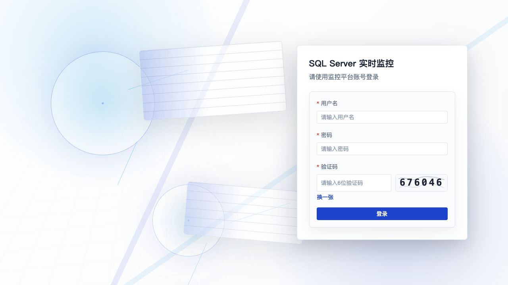
操作步骤：
- 打开登录页。
- 输入用户名和密码。
- 输入图片中的 6 位验证码。
- 验证码看不清时点击验证码图片或“换一张”。
- 点击“登录”进入系统。
接口关系：
| 步骤 | API |
|---|---|
| 获取验证码 | GET /api/auth/captcha |
| 登录 | POST /api/auth/login |
6. 主界面说明
登录后进入主界面，左侧为导航栏，右侧为当前页面内容。左侧导航包含：
| 菜单 | 路由 | 说明 |
|---|---|---|
| 仪表盘 | /dashboard | 实例整体状态、资源趋势、Top Wait、Top SQL |
| 会话监控 | /sessions | 当前 Session 列表、筛选、详情、终止 |
| SQL 分析 | /sqls | 当前运行 SQL 列表、排序、详情 |
| 阻塞分析 | /blocking | 阻塞链和根阻塞识别 |
| 缺失索引 | /indexes/missing | 查看缺失索引建议并发起索引创建 |
| 索引碎片 | /indexes/fragmentation | 查看索引碎片率并执行索引维护 |
| 回放分析 | /replay | 按时间查询历史快照 |
| 实例设置 | /settings/instances | SQL Server 实例维护 |
| 用户管理 | /settings/users | 平台用户、角色和账号状态维护 |
右上角可切换浅色/深色主题。左下角显示当前登录用户、登录时间和退出登录按钮。
7. 全局实例和刷新控制
多数监控页面顶部都有实例选择器和刷新控制。
操作步骤：
- 在“实例”下拉框选择目标 SQL Server 实例。
- 切换实例后，当前页面会重新拉取该实例数据。
- 开启“自动刷新”后，页面按选定间隔刷新。
- 需要临时观察现场时，可切换为“暂停”。
- 点击“刷新”可立即拉取最新快照。
当前截图环境中的实例为“主数据库 (192.168.1.26:1433)”。
8. 仪表盘使用流程
仪表盘是实时排障入口，用于先判断实例是否异常。
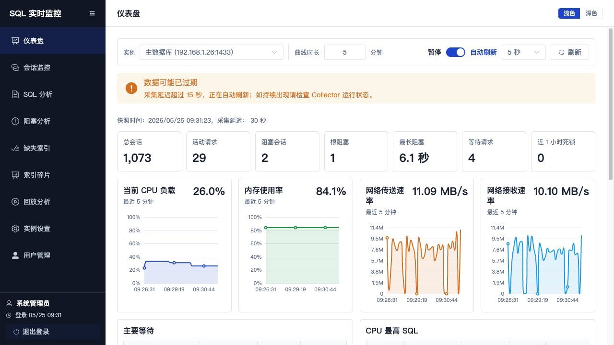
页面区域：
| 区域 | 说明 |
|---|---|
| 快照信息 | 展示快照时间和采集延迟 |
| 指标卡片 | 总会话、活动请求、阻塞会话、根阻塞、最长阻塞、等待请求、近 1 小时死锁 |
| 资源趋势 | CPU、内存、网络速率曲线 |
| 主要等待 | 当前 Wait 类型、类别、任务数和等待时长 |
| CPU 最高 SQL | 按 CPU 时间排序的 SQL |
| IO 最高 SQL | 按逻辑读/写入等指标展示高 IO SQL |
操作步骤：
- 选择目标实例。
- 根据“快照时间”和“采集延迟”判断数据是否新鲜。
- 查看指标卡片，优先关注“阻塞会话”“根阻塞”“最长阻塞”“等待请求”。
- 查看 CPU、内存、网络曲线，判断资源是否持续偏高。
- 查看“主要等待”，识别锁等待、IO 等待或其他等待类型。
- 在“CPU 最高 SQL”或“IO 最高 SQL”中点击“详情”查看完整 SQL。
SQL 详情弹窗示例：
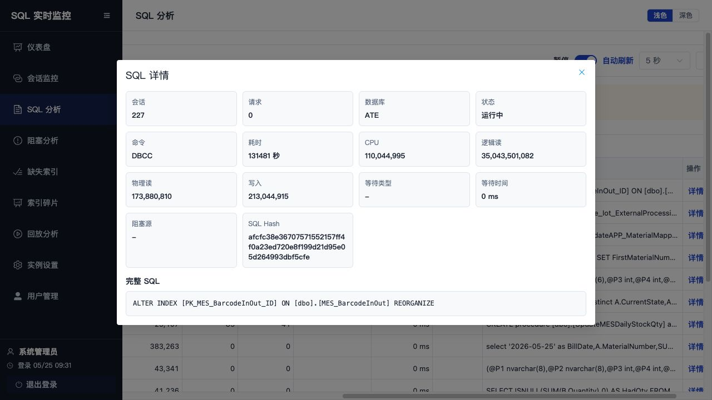
9. 会话监控流程
会话监控用于查看当前所有 Session 的状态、来源、资源消耗、等待和当前 SQL。
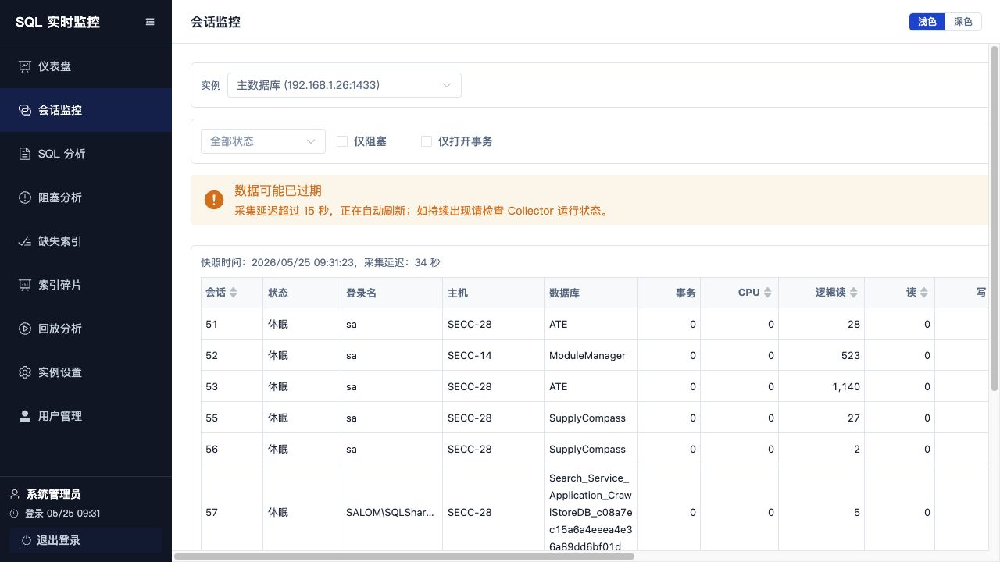
页面能力：
| 控件/列 | 说明 |
|---|---|
| 状态筛选 | 支持运行中、休眠、挂起 |
| 仅阻塞 | 只查看存在阻塞关系的会话 |
| 仅打开事务 | 只查看打开事务数大于 0 的会话 |
| 排序列 | 会话、CPU、逻辑读、读、写等字段可排序 |
| 详情 | 打开 Session 详情抽屉 |
| 终止 | 打开 Kill 确认弹窗 |
排查步骤：
- 进入“会话监控”。
- 选择目标实例。
- 需要定位阻塞时勾选“仅阻塞”。
- 需要定位长事务时勾选“仅打开事务”。
- 按 CPU、逻辑读、写入等列排序，找出资源消耗最高的 Session。
- 点击“详情”查看 Session 的来源、SQL、等待和阻塞信息。
- 如确认需要处置，点击“终止”，输入原因后提交。
Kill Session 处理流程：
用户点击终止
-> 前端弹出二次确认
-> 用户输入原因
-> 后端校验登录用户和安全规则
-> 后端连接 SQL Server 执行 KILL
-> 后端写入 kill_audits 审计记录
-> 前端刷新会话/阻塞数据相关接口：
| 功能 | API |
|---|---|
| 会话列表 | GET /api/sessions |
| 会话详情 | GET /api/sessions/{session_id} |
| 终止会话 | POST /api/kill |
| Kill 审计 | GET /api/audits/kills |
10. SQL 分析流程
SQL 分析用于查看当前正在执行的 SQL，并按 CPU、耗时、逻辑读、读、写、等待时间等指标排序。
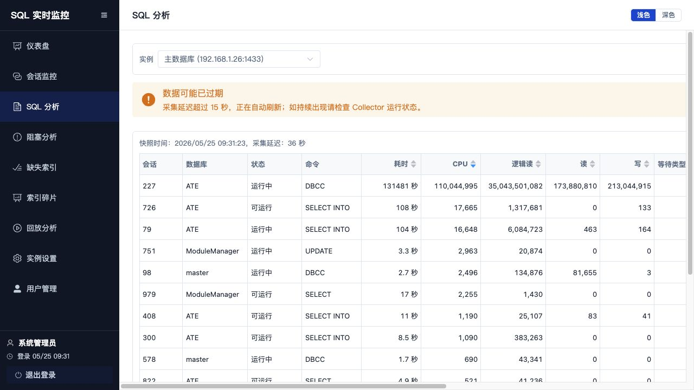
操作步骤：
- 进入“SQL 分析”。
- 默认按 CPU 倒序查看高 CPU SQL。
- 点击表头切换排序字段，例如耗时、逻辑读、写入、等待时间。
- 查看 SQL 预览，确认数据库、Session、命令和等待类型。
- 点击“详情”查看完整 SQL 文本、SQL Hash 和资源指标。
相关接口：
| 功能 | API |
|---|---|
| SQL 列表 | GET /api/sqls |
| SQL 详情 | GET /api/sqls/{sql_hash} |
11. 阻塞分析流程
阻塞分析用于展示阻塞链、根阻塞、被阻塞会话数、等待类型和锁资源。
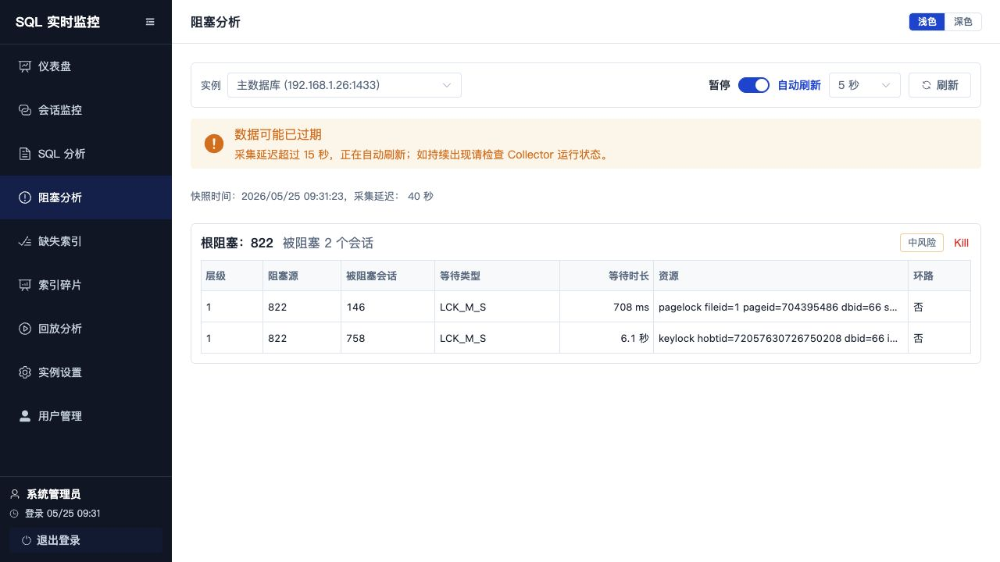
页面字段：
| 字段 | 说明 |
|---|---|
| 根阻塞 | 阻塞链最上游 Session |
| 被阻塞会话数 | 当前链路影响范围 |
| 风险等级 | low、medium、high 对应低/中/高风险 |
| 层级 | 阻塞链深度 |
| 阻塞源 | 造成当前节点等待的 Session |
| 被阻塞会话 | 正在等待的 Session |
| 等待类型 | SQL Server Wait Type |
| 等待时长 | 当前等待持续时间 |
| 资源 | 锁资源描述 |
| 环路 | 是否检测到阻塞环 |
阻塞排查步骤：
- 进入“阻塞分析”。
- 找到风险等级最高、被阻塞会话最多或最长等待时间最高的链路。
- 记录根阻塞 Session ID。
- 回到“会话监控”，搜索或定位该 Session，查看打开事务、主机、程序和 SQL。
- 回到“SQL 分析”，查看相关 SQL 的完整文本和资源指标。
- 判断是否为长事务、未提交事务、锁竞争或批量任务。
- 如需处置，通过“会话监控”的“终止”入口执行 Kill，并填写原因。
相关接口：
| 功能 | API |
|---|---|
| 阻塞链 | GET /api/blocking |
12. 缺失索引治理流程
缺失索引用于查看 SQL Server DMV 给出的索引建议，并在确认后发起 CREATE INDEX 操作。
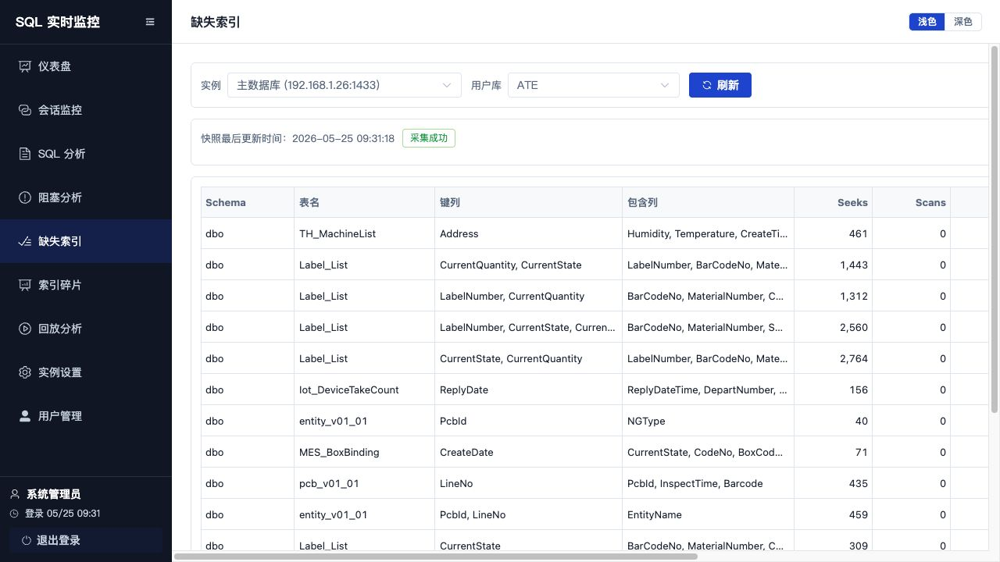
页面字段：
| 字段 | 说明 |
|---|---|
| 用户库 | 当前实例下的非系统数据库 |
| 快照最后更新时间 | Collector 最近一次采集缺失索引数据的时间 |
| 采集状态 | 采集成功、数据可能过期、采集失败 或 等待采集 |
| 键列 | 建议索引的 equality + inequality 列 |
| 包含列 | 建议索引的 include columns |
| Seeks / Scans | DMV 统计的查找和扫描次数 |
| 平均成本 / 影响% | SQL Server 估算的成本和收益 |
| 建议索引名 | 平台生成的轻量索引名称 |
| 新建索引 | 打开创建确认弹窗 |
操作步骤：
- 进入“缺失索引”。
- 选择目标实例。
- 在“用户库”下拉框选择需要治理的业务库。
- 查看快照更新时间和采集状态，确认数据是否可用。
- 按 Seeks、平均成本、影响% 等指标判断优先级。
- 重点检查“键列”和“包含列”，确认是否符合业务查询模式。
- 点击“新建索引”。
- 在弹窗中确认目标表、键列、包含列和索引名。
- 点击“确认创建”后，平台提交索引创建请求。
- 如果后端返回后台执行状态，页面会轮询索引审计结果；完成后刷新列表确认。
相关接口：
| 功能 | API |
|---|---|
| 用户库列表 | GET /api/indexes/databases |
| 缺失索引列表 | GET /api/indexes/missing |
| 新建索引 | POST /api/indexes |
| 索引操作审计 | GET /api/indexes/audits/{audit_id} |
13. 索引碎片维护流程
索引碎片用于查看用户库中索引的碎片率、页数和平台建议动作，并在确认后执行 REORGANIZE 或 REBUILD。
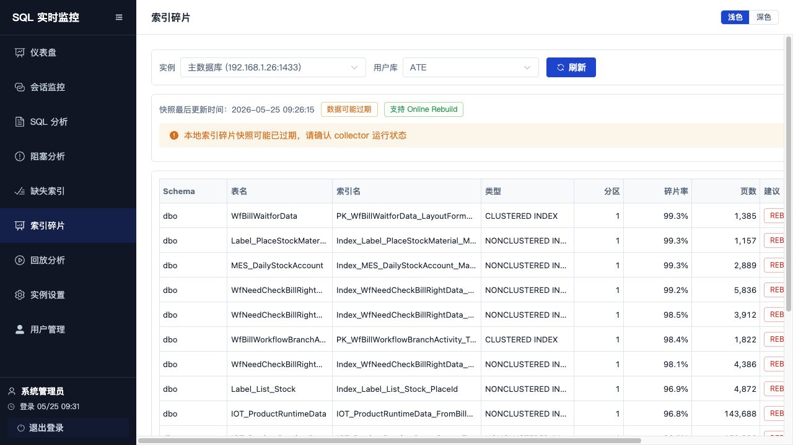
页面字段：
| 字段 | 说明 |
|---|---|
| 用户库 | 当前实例下的非系统数据库 |
| Online Rebuild | 当前实例是否支持在线重建 |
| 索引名 | 目标索引名称 |
| 类型 | SQL Server 索引类型 |
| 分区 | 分区号 |
| 碎片率 | avg_fragmentation_in_percent |
| 页数 | page_count |
| 建议 | NONE、REORGANIZE 或 REBUILD |
| 操作 | 对可处理索引执行建议动作 |
维护步骤：
- 进入“索引碎片”。
- 选择目标实例和用户库。
- 查看快照更新时间、采集状态和 Online Rebuild 支持情况。
- 按碎片率和页数判断维护优先级。
- 对建议为
REORGANIZE或REBUILD的行点击“执行”。 - 在弹窗中确认目标库、表、索引、分区、碎片率和动作。
- 点击“确认执行”提交维护请求。
- 如果操作进入后台执行，等待轮询结果或稍后刷新确认。
相关接口：
| 功能 | API |
|---|---|
| 索引碎片列表 | GET /api/indexes/fragmentation |
| 执行索引维护 | POST /api/indexes/fragmentation/actions |
| 索引操作审计 | GET /api/indexes/audits/{audit_id} |
注意事项：
- 索引创建、重建和重组都会在 SQL Server 中执行 DDL，请在业务低峰或明确授权后操作。
REBUILD在支持 Online Rebuild 的环境中会优先使用ONLINE = ON。- 操作连接依赖实例配置中的可执行数据库连接；未配置时会返回无法执行。
- 前端等待超时时，后台可能仍在执行，应通过审计结果或刷新页面确认最终状态。
14. 历史回放流程
回放分析用于按时间查询历史快照，复盘某一时刻的会话、SQL 和阻塞现场。
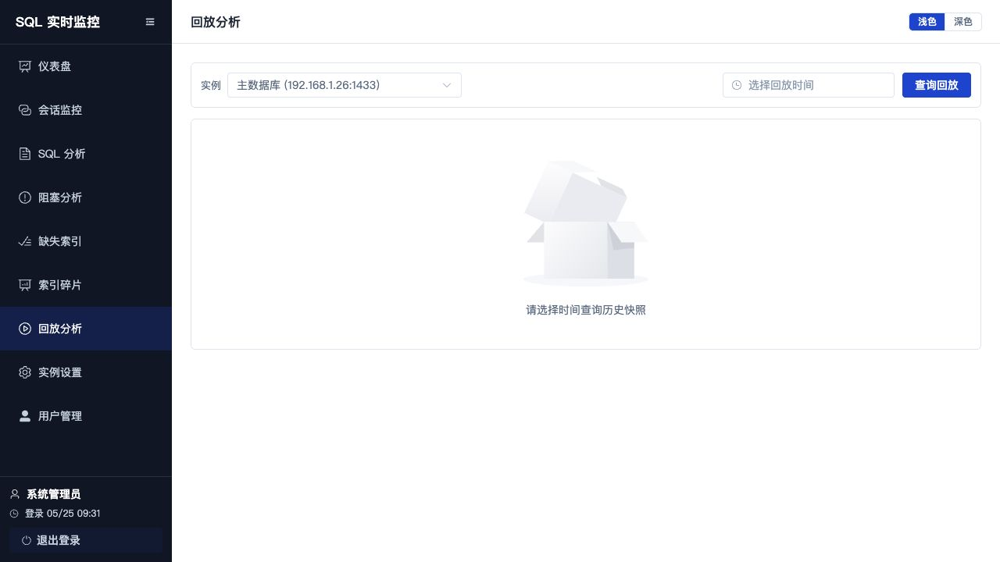
操作步骤：
- 进入“回放分析”。
- 选择目标实例。
- 在时间选择器中选择需要复盘的时间点。
- 点击“查询回放”。
- 页面展示请求时间和命中快照时间。
- 查看顶部指标卡片了解当时整体状态。
- 在“会话”“SQL”“阻塞”标签页中分别查看现场数据。
回放匹配规则：
用户选择时间
-> 前端请求 /api/replay
-> 后端查找不晚于目标时间的最近快照
-> 返回 dashboard / sessions / sqls / blocking / waits / tempdb
-> 前端按历史快照渲染相关接口：
| 功能 | API |
|---|---|
| 历史回放 | GET /api/replay |
15. 实例设置流程
实例设置用于维护 SQL Server 接入配置、采集策略和责任人。
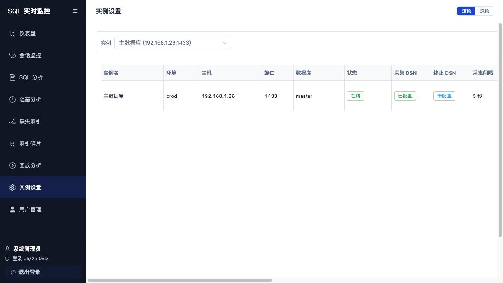
页面字段：
| 字段 | 说明 |
|---|---|
| 实例名 | 业务可读名称 |
| 环境 | prod、staging、dev 等 |
| 主机/端口 | SQL Server 地址 |
| 数据库 | 默认数据库 |
| 状态 | online、offline、collect_error、disabled |
| 采集 DSN | 是否已配置采集连接凭据 |
| 终止 DSN | 是否已配置 Kill 连接凭据 |
| 采集间隔 | Collector 采集周期 |
| 保留天数 | 历史快照保留周期 |
| 业务负责人 / DBA | 实例责任人 |
| SQL Server 版本 | 连接测试或采集得到的版本信息 |
新增实例步骤：
- 点击“新增实例”。
- 填写实例名称、IP 地址、端口。
- 填写 SQL 认证用户名和密码。
- 选择或输入数据库。
- 设置采集间隔和保留天数。
- 填写业务负责人和 DBA。
- 点击“测试连接”，确认连接成功并获取数据库列表/版本信息。
- 点击“保存”。
编辑实例步骤：
- 在实例列表中点击“编辑”。
- 修改基础信息、采集策略或责任人。
- 如需重建 DSN，填写用户名和密码；留空则保留原密码。
- 点击“测试连接”确认。
- 点击“保存修改”。
连接测试说明：
| 场景 | 操作 |
|---|---|
| 测试新实例 | 弹窗中点击“测试连接” |
| 测试已有实例 | 列表行点击“测试” |
| 批量测试 | 顶部点击“测试状态” |
| 自动测试 | 打开“自动测试”，选择 5 秒到 300 秒间隔 |
相关接口：
| 功能 | API |
|---|---|
| 实例列表 | GET /api/instances |
| 新增实例 | POST /api/instances |
| 编辑实例 | PUT /api/instances/{instance_id} |
| 删除实例 | DELETE /api/instances/{instance_id} |
| 测试新连接 | POST /api/instances/test-connection |
| 测试已有连接 | POST /api/instances/{instance_id}/test-connection |
16. 用户管理流程
用户管理用于维护平台本地账号、角色权限和账号状态。
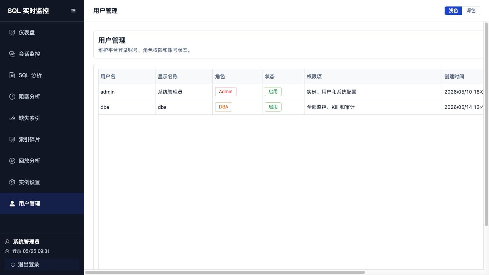
角色说明：
| 角色 | 权限说明 |
|---|---|
| Viewer | 基础指标只读 |
| Developer | Session、SQL、历史回放和完整 SQL |
| DBA | 全部监控、Kill、审计和索引治理 |
| Admin | 实例、用户和系统配置 |
新增用户步骤：
- 进入“用户管理”。
- 点击“新增用户”。
- 填写用户名、显示名称和初始密码。
- 选择角色。
- 点击“保存”。
编辑用户步骤：
- 在用户列表点击“编辑”。
- 修改显示名称、角色或状态。
- 点击“保存修改”。
重置密码步骤：
- 在用户列表点击“重置密码”。
- 输入不少于 8 位的新密码。
- 点击“保存密码”。
禁用用户步骤：
- 在用户列表点击“禁用”。
- 在确认弹窗中再次确认。
- 禁用后该用户无法继续登录平台。
限制说明：
- 只有
admin角色可以访问用户管理。 - 当前登录用户不能禁用自己。
- 用户名重复时，后端返回冲突错误。
相关接口：
| 功能 | API |
|---|---|
| 用户列表 | GET /api/users |
| 新增用户 | POST /api/users |
| 编辑用户 | PUT /api/users/{user_id} |
| 禁用用户 | POST /api/users/{user_id}/disable |
| 重置密码 | POST /api/users/{user_id}/reset-password |
17. 典型排障流程
17.1 实时阻塞排查
- 打开“仪表盘”。
- 查看“阻塞会话”“根阻塞”“最长阻塞”指标。
- 如果存在明显阻塞，进入“阻塞分析”。
- 找到风险最高或影响范围最大的阻塞链。
- 记录根阻塞 Session ID。
- 进入“会话监控”，打开该 Session 详情。
- 查看主机、程序、登录名、打开事务数、等待类型和 SQL 预览。
- 进入“SQL 分析”，查看相关 SQL 完整文本。
- 确认是否需要 Kill。
- 点击“终止”，填写原因并提交。
- 回到“阻塞分析”或“仪表盘”，刷新确认阻塞是否解除。
17.2 高 CPU SQL 排查
- 打开“仪表盘”。
- 观察 CPU 曲线是否持续偏高。
- 查看“CPU 最高 SQL”区域。
- 点击“详情”查看 SQL 文本和执行信息。
- 进入“SQL 分析”，按 CPU 倒序进一步查看更多 SQL。
- 结合数据库、命令、执行时长、逻辑读和等待类型判断问题性质。
17.3 高 IO SQL 排查
- 打开“仪表盘”。
- 观察网络速率和 IO 最高 SQL。
- 进入“SQL 分析”。
- 按逻辑读、读、写排序。
- 打开 SQL 详情，确认是否为大表扫描、批量写入或报表任务。
17.4 历史现场复盘
- 明确问题发生时间。
- 进入“回放分析”。
- 选择实例和问题时间点。
- 查询回放并记录命中快照时间。
- 查看当时的指标、会话、SQL 和阻塞。
- 必要时结合 Kill 审计接口查看处置记录。
17.5 缺失索引治理
- 进入“缺失索引”。
- 选择实例和用户库。
- 查看采集状态，确认快照不是过期或失败。
- 优先关注 Seeks 高、平均成本高、影响% 高的建议。
- 对照业务 SQL 和已有索引确认是否需要新建。
- 点击“新建索引”并确认索引名、键列和包含列。
- 提交后等待审计结果。
- 返回“SQL 分析”或业务侧观察查询性能变化。
17.6 索引碎片维护
- 进入“索引碎片”。
- 选择实例和用户库。
- 按碎片率、页数和建议动作筛选维护目标。
- 对建议为
REORGANIZE或REBUILD的索引执行维护。 - 对大表或高峰期敏感表，先确认维护窗口和锁风险。
- 操作后刷新页面确认碎片率和审计结果。
18. 验收和检查
后端测试：
cd backend
python3 -m pytest -v前端构建：
cd frontend
npm run build基础接口检查：
curl http://127.0.0.1:8000/api/healthP0 验收清单见：
docs/p0-acceptance-checklist.md19. 常见问题
19.1 登录失败
检查项：
- 用户名和密码是否正确。
- 验证码是否为当前图片中的 6 位数字。
- 验证码是否已过期。
- 后端 API 是否正常启动。
19.2 页面显示无数据或数据过旧
检查项：
- 当前实例是否选择正确。
- Collector 是否运行。
- 实例状态是否为
online。 - PostgreSQL 中是否存在最新快照。
- 页面顶部快照时间和采集延迟是否异常。
19.3 实例连接测试失败
检查项：
- SQL Server 主机和端口是否可达。
- SQL 认证用户名和密码是否正确。
- 默认数据库是否存在。
- 服务器是否安装 Microsoft ODBC Driver 18。
- SQL Server 账号是否具备采集所需 DMV 权限。
19.4 Kill Session 失败
检查项：
- 当前用户是否具备处置权限。
- Session ID 是否低于
SQLMON_MIN_KILLABLE_SESSION_ID。 - 实例是否配置终止 DSN。
- Kill 连接账号是否具备执行
KILL的权限。 - 目标 Session 是否已经结束。
19.5 索引页面无数据
检查项：
- 当前实例是否已有可用用户库。
- Collector 是否已完成索引采集。
SQLMON_INDEX_COLLECT_DATABASE_CONCURRENCY和采集超时是否适合当前库数量和表规模。- 采集账号是否具备查询缺失索引 DMV、
sys.indexes和sys.dm_db_index_physical_stats的权限。 - 页面快照状态是否提示采集失败或数据过期。